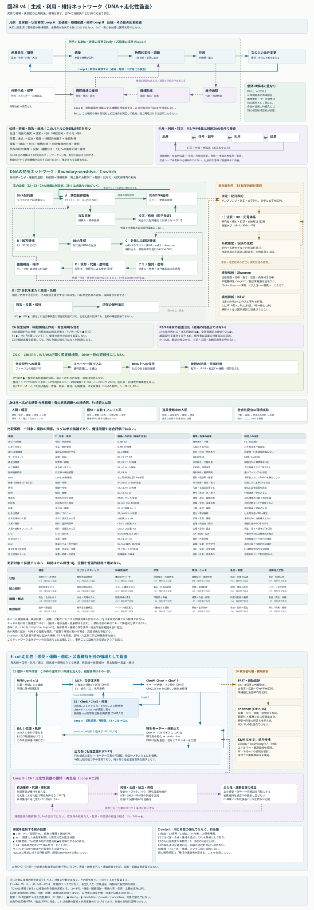

FIGURE 2B · V4 · 2D CANONICAL AUDIT MAP
図2B｜情報関係の生成・循環を読む
実際の系で、その関係がどう生成・循環・維持されるか
具体的な因果過程、環境帰還、状態調節、機構維持、更新を、DNA・細菌走化性などの局所ネットワークから読みます。
この2D監査図が図2Bの正本です。矢印は具体的な因果・生成・維持・更新を表し、図2Aの成立条件・監査関係とは異なります。 R/W/K/F/C/N/Mを単一の梯子や総合スコアにしません。
Shannon解析・K&Wは横断解析です。M3・N3・Fo・Fsは独立監査とし、個体UIを中央司令塔や内部画面とは読みません。
3D exploratory viewer を開く：配置・距離・近接は理論上の距離・階層・含意ではありません。
拡大後は図の枠内を縦横にスクロールできます。キーボードでは枠にフォーカスして矢印キーを使用します。ブラウザ自体のズームも利用できます。

図を読み込めませんでした。以下のSVG直接リンク、または文章の監査資料をご利用ください。

図が読めない環境・文章で確認したい場合
入力から出力までの一方向の列だけでなく、作用が環境を変え、次の感受へ戻る経路を読みます。状態を補償する調節と、その調節を可能にする機構の維持・更新は区別します。以下のHTML資料には説明・監査表があります。